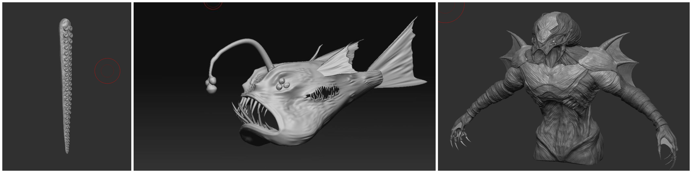
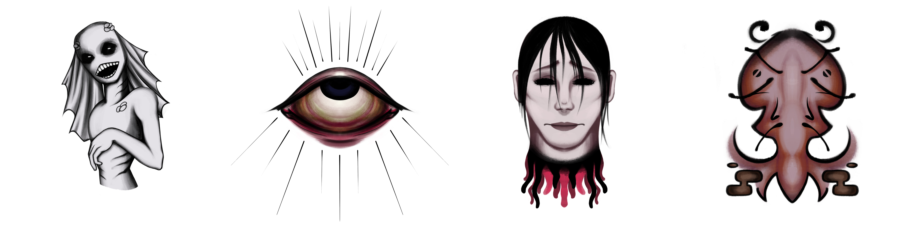

Core Game Mechanics
This section outlines the core mechanics of the game I specifically worked on.
AI Design (Tentacles, Angler Fish, Cthulhu)
Conceptualization, Implementation and Testing Iteration:
The AI system was designed to control various creatures in the game. The tentacles, angler fish, and Cthulhu boss were conceptualized to provide unique challenges and interactions for players.

Tentacles:
The tentacles were implemented to create a claustrophobic atmosphere in tight spaces. They were programmed with randomized movements to keep players on edge.
Tentacles Testing and Iteration:
Testing of the tentacles focused on player navigation and anxiety levels. Adjustments were made to their behavior to ensure they provided a challenging yet fair obstacle.
Angler Fish:
The angler fish was implemented as a guide for players, leading them to key locations in the game. Its movement patterns and behavior were carefully scripted to provide subtle hints to players.
Angler Fish Testing and Iteration:
Testing of the angler fish focused on player interaction and guidance. Iterative adjustments were made to its behavior based on player feedback to ensure it served its intended purpose effectively.
Cthulhu:
The Cthulhu boss served as the final challenge for players. Its AI was designed to create a sense of impending doom, with scripted attacks and environmental destruction.
Cthulhu Testing and Iteration:
Testing of the Cthulhu boss focused on player strategy and engagement. Adjustments were made to its difficulty and attack patterns to ensure a satisfying and challenging final encounter.
Game Cutscene
Conceptualization:
When envisioning the game's cutscenes, my aim was to create immersive cinematic experiences that would captivate players and deepen their connection to the game world. Drawing inspiration from horror classics and narrative-driven games, I crafted scenes that would instill a sense of dread and anticipation, setting the stage for the climactic encounter with the Cthulhu boss.
Implementation:
Bringing the envisioned cutscenes to life was a meticulous process that involved harnessing Unity's animation tools and scripting capabilities. Through careful choreography and attention to detail, I orchestrated dynamic sequences that seamlessly intertwined with gameplay, ensuring that players remained immersed in the unfolding narrative.
Testing and Iteration:
Testing the cutscenes involved evaluating their pacing, impact, and alignment with the game's overall tone and pacing. Iterative refinement was key, as I fine-tuned transitions, camera angles, and visual effects to evoke the desired emotional responses from players. By continuously iterating based on feedback, I aimed to deliver a truly cinematic experience that resonated with players.
Puzzle
Conceptualization:
I conceptualized intricate puzzles that would challenge players' problem-solving abilities while advancing the game's narrative. Each puzzle was designed to be intuitive yet rewarding, encouraging players to explore and interact with the game environment.

Implementation:
Implementing the puzzles involved integrating interactive elements into the game world and designing logical solutions. I utilized Unity's game mechanics to create dynamic puzzle mechanics and ensure seamless interaction between players and the game environment.
Testing and Iteration:
Testing focused on assessing the difficulty curve and player experience of each puzzle. Iterative refinements were made based on playtesting feedback, aiming to strike a balance between challenge and accessibility. Continuous iteration ensured that puzzles remained engaging and satisfying throughout the game.
The walls within the game environment are adorned with intricate drawings representing puzzle images. These drawings serve as clues for players to determine the correct sequence for pressing the corresponding image plates. Players must carefully analyze the drawings to decipher the correct order of pressing the plates, simulating the process of deciphering a code.